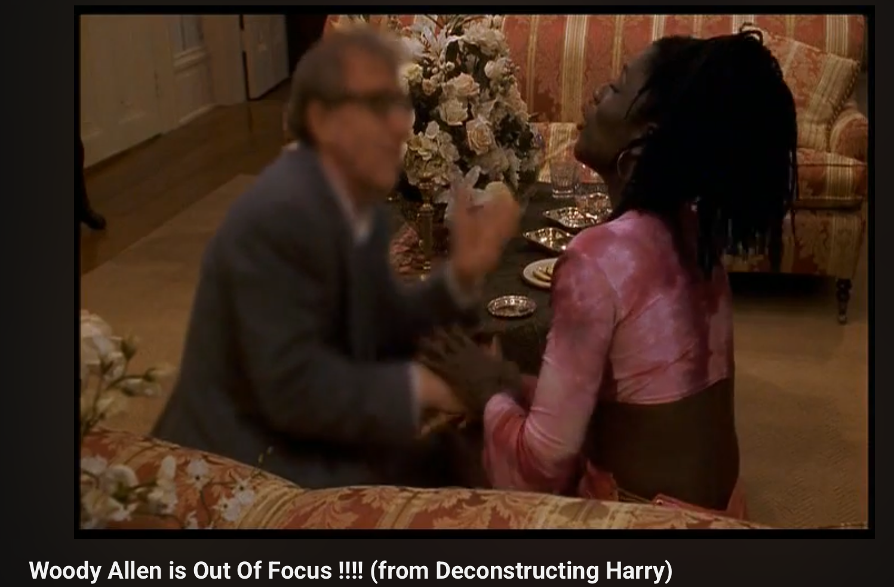

Fall 2025 Creative Portfolio
Blog writing response
In Defense of the Poor Image
The idea of “focus” in Woody Allen’s film stood out to me as an example of what the poor image represents.
Value placement held by a selected few in cinema who determine what good or high quality is versus poor quality.
“Focus is identified as a class position, a position of ease and privilege, while being out of focus lowers one’s values as an image.”
The character in the film is an actor but because his face appears as low resolution he isn’t desired for many roles.

Steyerl says “the contemporary hierarchy of images, however, is not only based on sharpness, but also and primarily on resolution.”
The end goal for the quality of cinema is to mimic 35 mm film. She says, “Poor images are poor because they are not assigned value within
the class society images…” Juan Garcia Espinosa believes these poor images will lead to a collective like consciousness pulling from
third cinema where the line between viewer and author are blurred. Copies and various versions of the original make up remixed
and new media that consumers can share in a digital age.
 This makes me think of the early days of YouTube and how content creators were using consumer phones and cameras to shoot and create
stunts or short viral videos like “La Caida de Edgar” where a little kid gets a bridge pulled from under him by his friend letting him fall in the stream below.
In the youtube link I found the title says “(the original)” which lets me know there have been multiple versions of this little guy falling in the water.
The author also wrote in the description “download the best quality of this video 39.5mb” of this video with the link. Even users of what would be considered
a “poor image” are still aiming for the quality class standard of a good image. Yet, these images are the ones that are creating a digital cult culture.
This video has been around now for about two decades and continues to be a cultural reference, unfortunately, of a chunky little kid falling as a prank.
This makes me think of the early days of YouTube and how content creators were using consumer phones and cameras to shoot and create
stunts or short viral videos like “La Caida de Edgar” where a little kid gets a bridge pulled from under him by his friend letting him fall in the stream below.
In the youtube link I found the title says “(the original)” which lets me know there have been multiple versions of this little guy falling in the water.
The author also wrote in the description “download the best quality of this video 39.5mb” of this video with the link. Even users of what would be considered
a “poor image” are still aiming for the quality class standard of a good image. Yet, these images are the ones that are creating a digital cult culture.
This video has been around now for about two decades and continues to be a cultural reference, unfortunately, of a chunky little kid falling as a prank.